4.17 Basin analysis¶
Multiwfn manual, p.775–803. Images:
../imgs/.
spin, you can find the bar of orbital 5 of fragment 1 is dashed (unoccupied) while that of fragment 2 is solid (occupied). In fact, there is no need to view the alpha and beta orbital interaction diagrams as two different maps, you can think that actually there is only one orbital interaction diagram, in which the orbitals 1~4 of fragments 1 and 2 are doubly occupied, while the orbital 5 of fragment 1 is unpaired alpha electron orbital and orbital 5 of fragment 2 is unpaired beta electron orbital.
It is worth to note that if you plot this orbital interaction diagram based on ROKS fragment orbitals, you will find that for each spin, complex orbitals are not always equally contributed by fragments orbitals of the two fragments despite the two methyl groups are chemically equivalent, this is because alpha and beta ROKS orbitals do not share identical energies and shapes. Obviously, analyzing based on ROKS orbitals makes discussion markedly easier than based on UKS orbitals, for which you have to study interaction diagram of alpha and beta spins respectively.
4.17 Basin analysis¶
Note: Some examples in this section are also available in my blog article “Using Multiwfn to perform basin analysis for electron density, ELF, electrostatic potential, density difference and other functions” (http://sobereva.com/179, in Chinese).
Below I will show how to use basin analysis module of Multiwfn to perform basin analysis for several molecules and for various real space functions. Related theory, numerical algorithms and the usage of this module have been detailedly introduced in Section 3.20. If you are not familiar with the concept of basin, please consult Section 3.20.1 first. While if you want to know more details about basin analysis, please consult Sections 3.20.2 and 3.20.3.
You should know that Multiwfn uses a grid-based method (in particular, near-grid method) to locate attractors, generate and integrate basins; in other words, most tasks realized in the basin analysis module rely on grid data. This is why in the sections below "grid data" is frequently mentioned.
4.17.1 AIM basin analysis for HCN and Li6
In this example we will analyze basins of electron density (also known as AIM basins) for HCN molecule, which is a very representative molecule. Only at final part of this section, I will also show how to carry out basin analysis of electron density for Li6 atomic cluster, since this is a special case, in which there are some "pseudoatoms".
After you carefully read this section, I believe you will understand most of basic operations of the basin analysis module in Multiwfn.
Generate basins and locate attractors Boot up Multiwfn and input following commands examples\HCN.wfn
Multiwfn session
- 17 — Basin analysis
- 1 — Generate basins and locate attractors
- 1 — The grid data to be calculated and thus analyzed is for electron density
- 2 — Medium-quality grid. This is enough for most cases, if you want to obtain a better result, you can choose "High-quality grid", but much more computational time will be spent
Multiwfn now starts to calculate grid data for electron density, and then generates basins and locates attractors based on the grid data; soon you will see attractor information, as shown below (notice that the attractor sequence may be different to your actual case if parallel mode is enabled, similarly hereinafter):
Attractor X,Y,Z coordinate (Angstrom) Value
1 -0.02645886 -0.02645886 -1.52058663 0.33959944
2 0.02645886 0.02645886 -0.51514986 49.48609717
3 -0.02645886 -0.02645886 0.64904009 76.55832377
From now on you can check the information of the located attractors anytime by option -3.
Visualization of basins and attractors Now choose option 0 to visualize the basins and attractors. The purple labels indicate the index of the located attractors. Since attractors of electron density are very close to nuclei, if you want to see them, you should deselect "Show molecule" check box first. Here we select 1 from the basin list at the right-bottom corner, the basin corresponding to attractor 1 will be immediately shown. By default, only interbasin part of the basin is shown, if you want to inspect the whole basin you should select "Show basin interior" checkbox. After we select it, the GUI will look like below:
If you only want to visualize the region of the atomic basin in the vdW surface (defined as
ρ=0.001 a.u. in the present context), you can choose "Set basin drawing method" - "rho>0.001 region only", then you can see:
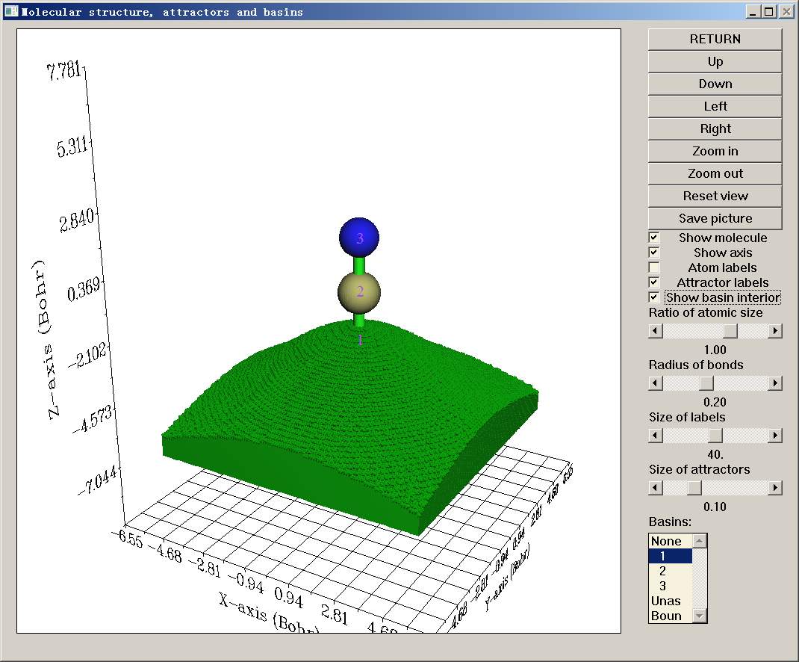
Now click "RETURN" button to close the GUI. You may have noticed the information below in the command-line window
The number of unassigned grids: 0
The number of grids travelled to box boundary: 0
Commonly the number of these two types of grids should be zero, only in rare cases they are not zero; in such cases, you can visualize them by respectively selecting "Unas" and "Boun" in the basin list of the GUI. These grids do not belong to any basin, and generally they lack physical meaning; to understand when and why they occur please consult Section 3.20.2.
Integrating basins Next, we calculate the integral of electron density (electron population number) in these basins.
Select function 2, then you will see many options. Each option with the serial ≥ 1 corresponds to a real space function; if you select one of them, corresponding real space function will be integrated in the generated basins. In present example we can select option 1, which corresponds to electron density. However, since we have already calculated grid data for electron density, and the grid data of electron density thus have been stored in memory, we can directly use it rather than compute it again to reduce computational time, so here we select option 0 to use "The values of the grid data stored in memory". Since electron density at the grids does not need to be re-evaluated, the integrals are outputted immediately:
#Basin Integral(a.u.) Volume(a.u.^3)
1 0.7356142812 441.70000000
2 5.3511723358 566.84900000
3 7.9020047534 829.72600000
Sum of above values: 13.98879137
There should be totally 1+6+7=14 electrons in present system; unfortunately, the sum of the integrals of electron density is 13.98879, which evidently deviates from the ideal value!
Because the basin we are studying is AIM basin, the best choice to obtain the basin integral is using function 7 rather than function 2. In function 7, mixed atomic-center and uniform grids are used, while function 2 only employs uniform grid to integrate. We input:
Multiwfn session
- 7 — Integrate real space functions in AIM basins with mixed type of grids
- 1 — Integrate a specific function with atomic-center + uniform grids
- 1 — Select electron density as the integrand The result is
#Basin Integral(a.u.) Vol(Bohr^3) Vol(rho>0.001)
1 0.7356461300 441.710 34.884
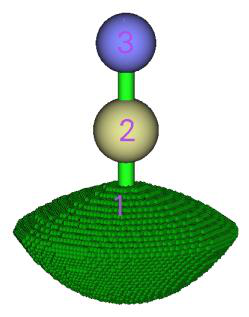
2 5.3552275427 566.347 102.832
3 7.9086499057 830.218 134.228
Sum of above integrals: 13.99952358
Sum of basin volumes (rho>0.001): 271.944 Bohr^3
As you can see, the sum of the integrals of electron density (13.999) is almost exactly identical to the expected value 14.0, obviously the result is much better than using function 2. The basin volumes are also outputted. The terms "vol(Bohr^2)" do not have clear physical meaning, since they are directly affected by the spatial range of grid setting. However, the terms "vol(rho>0.001)" are useful, they exhibit the volume of the basin enclosed by the isosurface of electron density > 0.001 (Bader's vdW surface) and thus can be regarded as atomic sizes.
The atomic charge (AIM charge) of these atoms and their volumes are also outputted
Normalization factor of the integral of electron density is 0.999966
The atomic charges after normalization and atomic volumes:
1 (C ) Charge: 0.644590 Volume: 102.832 Bohr^3
2 (N ) Charge: -0.908919 Volume: 134.228 Bohr^3
3 (H ) Charge: 0.264329 Volume: 34.884 Bohr^3
Note that above AIM charges are not very accurate! To obtain more accurate integrals in AIM basins, you should select option 2 or 3 in function 7; compared to 1, they will refine the assignment of basin boundary to conspicuously improve the integration accuracy, but additional computational cost must be afforded. Here we try it, select option 2 in function 7, then input 1, the result is
Normalization factor of the integral of electron density is 0.999967
The atomic charges after normalization and atomic volumes:
1 (C ) Charge: 0.748980 Volume: 100.160 Bohr^3
2 (N ) Charge: -1.003918 Volume: 136.304 Bohr^3
3 (H ) Charge: 0.254938 Volume: 35.480 Bohr^3
It is seen that the atomic charges are varied compared to earlier (more accurate than before).
To further improve the integration accuracy, when generating basins, one should select a grid setting better than "medium-quality grid", e.g. "High-quality grid" or even "Lunatic quality grid". But bear in mind that for large systems, high-quality grid may consume very large amount of computational time and memory, and lunatic-quality grid needs more.
Although as we have seen the integration accuracy of function 7 (uniform + atomic center integration grid) is much better than function 2 (purely uniform integration grid), the former is only applicable to integrate AIM basins, while the latter can be used for any type of basin (e.g. ELF basin).
Note: If you used option 2 or 3 in function 7, during the boundary grid refinement process, the assignment of basin boundary will be updated permanently, that means the result of subsequent analyses (e.g. calculating LI/DI, electric multipole moment) will also become more accurate.
In summary, the common steps for obtaining reliable AIM charges after you enter basin analysis module is
Multiwfn session
- 1 — Generate basin
- 1 — Electron density
- 2 — Medium-quality grid. Select high-quality grid if you wish to get more accurate result
- 7 — Integrate real space functions in AIM basins with mixed type of grids
- 2 — Integrate and meantime refine basin boundary
- 1 — Electron density The most convenient way of calculating AIM charges in Multiwfn is simply choosing
subfunction 14 of main function 7, as illustrated in Section 4.7.11! Which automatically perform all aforementioned steps.
Calculate electric multipole moments of basins Now enter function 8 to calculate electric multipole moments for the AIM basins using mixed grid (you can also use function 3 to do this based on uniform grid, but the accuracy is significantly poorer). Only the result of carbon is pasted below
***** Result of atom 1 (C ), corresponding to basin 2
Basin monopole moments (from electrons): -5.250848
Atomic charge: 0.749152
Basin dipole moments:
X= 0.000003 Y= 0.000000 Z= 1.095848 Norm= 1.095848
Basin electron contribution to molecular dipole moment:
X= 0.000003 Y= 0.000000 Z= 6.026238 Norm= 6.026238
Basin quadrupole moments (Traceless Cartesian form):
XX= -0.759567 XY= 0.000000 XZ= -0.000002
YX= 0.000000 YY= -0.759565 YZ= -0.000005
ZX= -0.000002 ZY= -0.000005 ZZ= 1.519132
Magnitude of the traceless quadrupole moment tensor: 1.519132
Basin quadrupole moments (Spherical harmonic form):
Q_2,0 = 1.519132 Q_2,-1= -0.000006 Q_2,1= -0.000002
Q_2,-2= 0.000000 Q_2,2 = -0.000001
Magnitude: |Q_2|= 1.519132
Basin electronic spatial extent <r^2>: 8.542655
Components of <r^2>: X= 3.353930 Y= 3.353928 Z= 1.834797
The formulae used to evaluate these terms are basically the same as those given in Section 3.18.3, however, the nuclear positions should be replaced by attractor positions, and the spatial ranges of the integration should be basins rather than fuzzy atomic spaces.
The electric monopole moment (-5.251 a.u.) is just the negative value of electron population in the basin. Z-component of electric dipole moment of the basin is a positive value (1.096 a.u.), suggesting that in basin 2, most electrons are distributed in the regions where Z-coordinate is more negative than attractor 2. The ZZ-component of basin electric quadrupole moment is positive (1.519 a.u.), while the other diagonal components are negative, indicating that relative to attractor 2, electron cloud in this basin contracts in Z-direction but elongates in other directions.
The
Calculate localization index and delocalization index of basins Delocalization index (DI) is a quantitative measure of the number of electrons delocalized (or say shared) between two regions, while localization index (LI) quantitatively measures how many electrons are localized in a region. For details about LI and DI please see Section 3.18.5. The only difference relative to the statements in that section is that here the LI and DI will be calculated based on basins rather than based on fuzzy atomic spaces.
Choose function 4, then select option 2 to use mixed grid to evaluate basin overlap matrix, then LI and DI will also be calculated. As you can see from screen, the LI and DI matrix are outputted
first based on basin indices, after that, Multiwfn identifies correspondence between atom indices and basin indices, then prints LI and DI matrix based on atom indices, as shown below
Detecting correspondence between basin and atom indices (criterion: <0.3 Bohr)
Basin 2 corresponds to atom 1 (C )
Basin 3 corresponds to atom 2 (N )
Basin 1 corresponds to atom 3 (H )
************** Total delocalization index matrix (atom index) **************
1 2 3
1 3.49274177 2.59233062 0.90041116
2 2.59233062 2.66486431 0.07253370
3 0.90041116 0.07253370 0.97294485
Total localization index (atom index):
1: 3.50427 2: 6.67098 3: 0.25855
Since present molecule is a closed-shell system, only total LI and DI are outputted, the LI and
DI for α and β electrons are not outputted separately. As you can see, between C1 and N2 atomic basins, the DI is 2.592, exhibiting that there are 2.592 electrons effectively shared by the two atoms. To some extent DI can be regarded as covalent bond order, the DI value 2.592 is indeed comparable with the formal bond order (3.0) between C and N in HCN. The diagonal terms are the sums of the elements in corresponding row/column, for closed-shell cases they can be somewhat considered as atomic valence. So, we can say the N2 atom in HCN has atomic valence of 2.665.
The LI of H3 is only 0.256, which conspicuously deviates from the basin electron population. This observation reflects that in HCN, the electron in the AIM atomic space of hydrogen can easily delocalize out.
Special case: Basin analysis when pseudoatoms are presented Pseudoatom is also known as non-nuclear attractor (NNA) of electron density, it refers to maximum of electron density that are not at nuclear position. There are various reasons that can cause the NNAs, for example, existence of metal bond or quality of wavefunction is too poor. Here I use Li6 cluster as example to illustrate how to deal with the case when NNAs are presented.
Boot up Multiwfn and input examples\Li6.fch
Multiwfn session
- 17 — Basin analysis
- 1 — Generate basins and locate attractors
- 1 — Electron density
- 1 — For illustration purposes, here we only use low-quality grid for saving time
- 0 — Visualize attractors and basins Left part of the graph below shows geometry of the cluster, the three green spheres indicate position of the three NNAs; right part of the graph displays corresponding basin of one of NNAs. As you can see, attractors 2, 4, 8 are NNAs.
If you plot color-filled map of valence electron density for the Li6 via the steps illustrated in Section 4.6.2, you will immediately understand why there exists NNAs at center of the boundary Li triangles. From the graph below you can clearly see that at center of each boundary triangle there is indeed a maximum of electron density, this observation also implies presence of three-center bonds
Next, we calculate population number of the AIM basins. Input below commands
Multiwfn session
- 7 — Integrate real space functions in AIM basins with mixed type of grids
- 2 — Integrate and meantime refine basin boundary
- 1 — Electron density
During integrating the basins, calculation will pause three times and meantime you will find prompt like below on screen. This is because program does not know how to properly deal with the three NNAs, namely attractors 2, 4, 8:
Warning: Unable to determine the attractor 2 belongs to which atom!
If this is a non-nuclear attractor, simply press ENTER button to continue. If you used
pseudopotential and this attractor corresponds to the cluster of all maxima of its valence
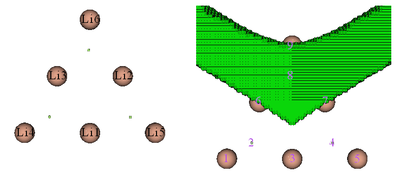
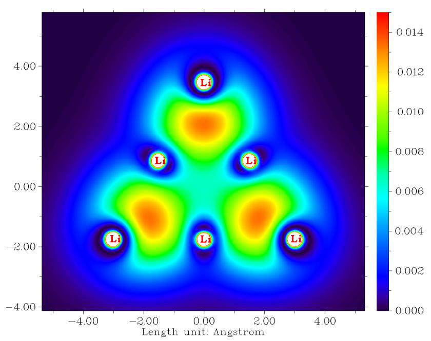
electron, then input the index of this atom (e.g. 9). Else you should input q to return
and regenerate basins with smaller grid spacing
Since we already know that attractors 2, 4, 8 are regular NNAs, according to the prompt, what we should do is simply pressing ENTER button to continue the calculation. Finally, you will find below output
Normalization factor of the integral of electron density is 0.999992
The atomic charges after normalization and atomic volumes:
2 (NNA) Charge: -1.249592 Volume: 273.680 Bohr^3
4 (NNA) Charge: -1.249536 Volume: 273.680 Bohr^3
8 (NNA) Charge: -1.249079 Volume: 274.048 Bohr^3
1 (Li) Charge: 0.757502 Volume: 69.792 Bohr^3
2 (Li) Charge: 0.756323 Volume: 70.000 Bohr^3
3 (Li) Charge: 0.756331 Volume: 70.000 Bohr^3
4 (Li) Charge: 0.492816 Volume: 139.296 Bohr^3
5 (Li) Charge: 0.492759 Volume: 139.296 Bohr^3
6 (Li) Charge: 0.492477 Volume: 139.392 Bohr^3
As can be seen, each NNA basin carries 1.249 electrons, therefore charge of the basin is -1.249. When NNAs are presented, it is clearly unable to rigorously define AIM atomic charges, since sum of all AIM atomic charges will be unequal to net charge of the whole system. This is one of severe limitations of AIM atomic charge.
Drawing basins via VMD program When showing basins, you can easily get much better graphical effect if you make use of VMD program. See this video illustration: "Drawing AIM basins (atomic basins) in Multiwfn and VMD" (https://youtu.be/9D5do80XcbI).
Briefly speaking, what you need to do is selecting option -5 in the basin analysis module, input indices of the basins of interest, and then choose "3 Output all basin grids where electron density > 0.001 a.u." to export the basins as individual cube files. Then loading them into VMD and plot them as isosurfaces with isovalue=0.5, you can get a graph like the following one (oxygen basin of examples\acrolein.wfn):
As illustrated in the aforementioned video tutorial, you can even simultaneously draw multiple basins and show critical points + bond paths in VMD. For example, the map below represents atomic basins of four non-hydrogen atoms of acrolein, the orange and purple spheres correspond to bond critical points and nuclear critical points, respectively. The yellow thick lines are bond paths.
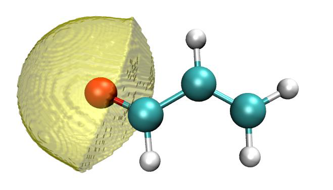
4.17.2 Example of ELF basin analysis¶
Multiwfn is very powerful in ELF basin analysis. As an example, in this section we analyze ELF basin for a typical small molecule, acetylene. Boot up Multiwfn and input
Multiwfn session
- examples\C2H2.wfn 17 — Basin analysis
- 1 — Generate basins and locate attractors
- 9 — ELF 2
Part 1: Visualize attractors and basins We enter option 0 to visualize ELF attractors and basins, you will see the following map. The attractors are represented as green spheres, and the purple texts are basin indices. You can find there are lots of closely placed attractors encircling the C-C bond, they have basically identical ELF values and collectively represent the ring-like ELF attractor. These attractors have been clustered together by Multiwfn automatically, therefore all of them have the same attractor index, namely 2; in other words, attractor 2 is a degenerate attractor, which contains many member attractors (or pristine attractors). Correspondingly, basin 2 is composed of all member basins.
You can choose 2 in the list at bottom-right of the GUI to visualize basin 2, you can see
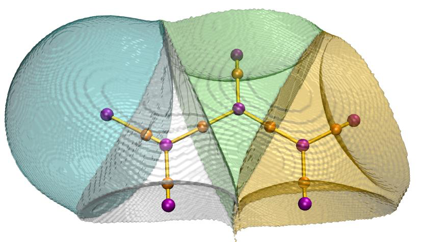
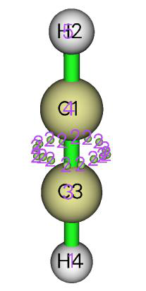
Sometimes it is better to only visualize the basin region where electron density is higher than 0.001 a.u. To do this, select “Set basin drawing method” in the menu bar and then choose “rho>0.001 region only”, then click “Show basin interior” check box at right side of the GUI, you will see
All electrons contributing to C1-C3 bond are lying in the basin 2 shown above.
The presence of attractor 2 signifies the π electrons shared by the two carbons. According to the well-known ELF symbolic scheme, basin 2 should be identified as V(C1,C3), which means this basin is comprised by valence electrons of C1 and C3 and contributes to existence of C1-C3 bond.
Attractors 3 and 4 correspond to core-type ELF attractors, their basins should be identified as C(C3) and C(C1), respectively, where the letter C out of parentheses stands for "Core". If you deselect the "Show molecule" check box and select corresponding terms in the basin list, then you can visualize the basins. The graph shown below portrays C(C3) basin
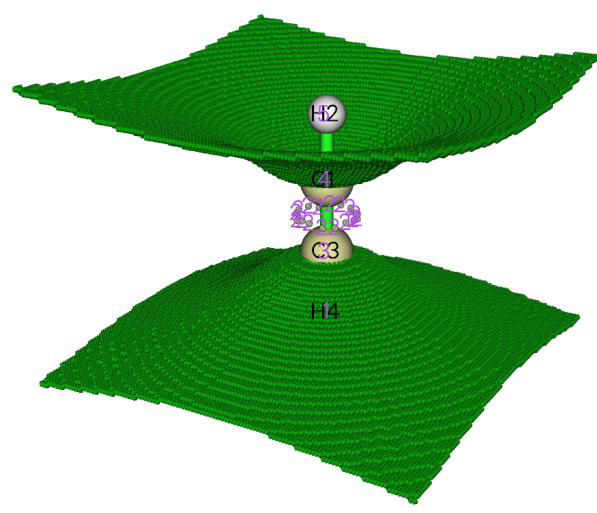
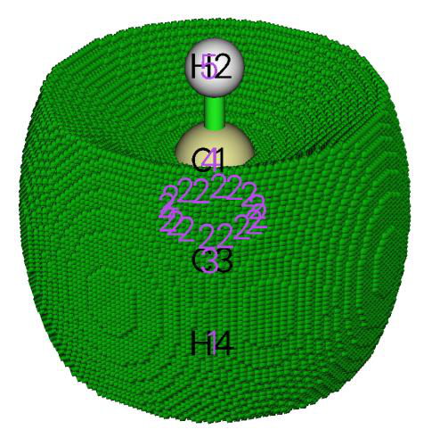
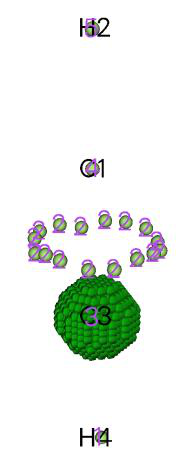
Although basins 1 and 5 cover the atomic space of H4 and H2, they should be identified as V(C3,H4) and V(C1,H2), respectively, rather than C(H4) and C(H2). This is because hydrogen does not have core electrons, and the electrons in the two basins directly contribute to C3-H4 and C1-H2 bonds.
Now close the GUI window by clicking "RETURN" button at upper right side of GUI.
Part 2: Automatically assigning ELF basin labels When the system is relatively large, or there are numerous structures to be studied (for example, in bond evolution theory analysis you need to study a batch of IRC points), manually assigning labels for ELF basins is quite troublesome. Fortunately, Multiwfn is able to automatically assign basin labels, as long as the real space function you selected is ELF.
We choose option “12 Assign ELF basin labels”, then you will immediately see
The following information is printed according to basin indices
Basin indices, populations (e), volumes (Angstrom^3) and assigned labels
Basin 1 Pop.: 2.2160 Vol.: 113.865 Label: V(C3,H4)
Basin 2 Pop.: 5.3670 Vol.: 144.158 Label: V(C1,C3)
Basin 3 Pop.: 2.0949 Vol.: 0.123 Label: C(C3)
Basin 4 Pop.: 2.0949 Vol.: 0.123 Label: C(C1)
Basin 5 Pop.: 2.2160 Vol.: 113.884 Label: V(C1,H2)
Sum of core basin populations: 4.1898
Sum of valence basin populations: 9.7990
Sum of all basin populations: 13.9888
Sorting basins according to labels...
The following information is printed according to order of basin labels
Basin indices, populations (e), volumes (Angstrom^3) and assigned labels
## 1 Basin 4 Pop.: 2.0949 Vol.: 0.123 Label: C(C1)
## 2 Basin 3 Pop.: 2.0949 Vol.: 0.123 Label: C(C3)
## 3 Basin 5 Pop.: 2.2160 Vol.: 113.884 Label: V(C1,H2)
## 4 Basin 2 Pop.: 5.3670 Vol.: 144.158 Label: V(C1,C3)
## 5 Basin 1 Pop.: 2.2160 Vol.: 113.865 Label: V(C3,H4)
Number of core basins is 2, their indices:
3,4
Number of 2-synaptic basins is 3, their indices:
1,2,5
As can be seen above, the data are outputted twice. First, basin population, volume and labels are printed in the order of basin indices. Then, the basins are sorted according to labels, and the data are outputted again. From the labels, the physical meaning of each basin can be quickly and clearly recognized.
Note that ELF basin labels may be unable to be correctly assigned for atoms using pseudopotential.
Part 3: Estimate basin properties Multiwfn is able to calculate integral of any real space function in generated basins. For
example, we calculate integral of electron density in every basin, now input
Multiwfn session
- 2 — Integrate a real space function in the basins
- 1 — Electron density Soon, we get the integrals, namely the average electron population number in each basin:
#Basin Integral(a.u.) Volume(a.u.^3)
1 2.2159821094 768.40000000
2 5.3670483807 972.85100000
3 2.0949016050 0.83200000
4 2.0949016050 0.83200000
5 2.2159826437 768.49900000
Sum of above values: 13.98881634
Both C(C1) and C(C3) contain 2.095 electrons on average, which is in line with the fact that carbon has two electrons in its core. Also, the average population number in V(C3,H4) and V(C1,H2) are close to two, approximately reflecting that on average there is a pair of electrons shared between C and H.
According to classical chemical bond theory there are three electron pairs and hence six electrons are shared by the two carbons, however in the V(C1,C3) basin the integral is only 5.37. Although the deviation is relatively large, this is a normal situation. It is senseless to expect that the result of ELF basin analysis must be able to reproduce classical Lewis picture, and actually, ELF analysis is more advanced and closer to real physical picture.
Part 4: Electric multipole moments of basins Electric multipole moments of ELF basins are able to characterize electron distribution in featured regions. To calculate them, we enter option “3 Calculate electric multipole moments and
***** Basin 4
Basin monopole moment: -2.094902
Basin dipole moment:
X= -0.104745 Y= -0.104745 Z= 0.020728 Norm= 0.149575
Basin electron contribution to molecular dipole moment:
X= -0.000000 Y= 0.000000 Z= -2.388409 Norm= 2.388409
Basin quadrupole moment (Traceless Cartesian form):
XX= -0.003034 XY= -0.007856 XZ= 0.001555
YX= -0.007856 YY= -0.003034 YZ= 0.001555
ZX= 0.001555 ZY= 0.001555 ZZ= 0.006067
Magnitude of the traceless quadrupole moment tensor: 0.006067
Basin quadrupole moments (Spherical harmonic form):
Q_2,0 = 0.006067 Q_2,-1= 0.001795 Q_2,1= 0.001795
Q_2,-2= -0.009071 Q_2,2 = 0.000000
Magnitude: |Q_2|= 0.011205
Basin electronic spatial extent <r^2>: 0.196110
Components of <r^2>: X= 0.067392 Y= 0.067392 Z= 0.061325
First you should note that although in present case, due to the symmetry, the X and Y
components of the basin electric dipole moment should vanish, the actual values are not so close to zero, implying that the integration accuracy is not very high. This is why "high-quality grid" is often necessary for electric multipole moment analysis. However, the present result is still useful for qualitative analysis. The magnitude of electric quadrupole moment in the basin quantifies how evidently the electron distribution in the basin deviates from spherical symmetry. This value for C(C1) is very small (0.0061), showing that the distribution of core electron of the carbon basically remains unperturbed during the formation of the molecule.
Now input 0 to return to basin analysis module. Note: If the basins you are interested in are only valence basins, "medium-quality grid" is enough for electric multipole moment analysis, since valence density is not as high as core density, and hence does not need high accuracy of integration.
Part 5: Localization index (LI) and delocalization index (DI) Multiwfn is able to calculate LI for each basin and DI between each pair of basins. Now we choose option 4 to study LI and DI. The result is shown below
********************* Total delocalization index matrix *********************
1 2 3 4 5
1 1.31231709 1.03496562 0.16085935 0.02291204 0.09358009
2 1.03496562 2.71090548 0.32048710 0.32048709 1.03496568
3 0.16085935 0.32048710 0.51131492 0.00705643 0.02291205
4 0.02291204 0.32048709 0.00705643 0.51131492 0.16085937
5 0.09358009 1.03496568 0.02291205 0.16085937 1.31231718
Total localization index:
1: 1.55970 2: 4.01124 3: 1.83397 4: 1.83397 5: 1.55970
The DI between C(C1) and C(C3), namely DI(3,4), is trivial, reflecting the general rule that the electron delocalization between atomic core regions is rather difficult. DI(1,3) and DI(2,3) are very small values but not close to zero, representing that the electrons in C(C3) have a few probability to exchange with the ones in V(C3,H4) and V(C1,C3), which are the only two basins adjacent to C(C3).
DI(2,1) and DI(2,5) are about 1.0, such a large value indicates that the electron delocalization between C-C bond region and C-H bond region is easy. Though the average electron population number in both C(C1) and C(C3) are 2.095, their LI values are as high as 1.834, exhibiting that the core electrons of carbon highly prefer to stay in the core region rather than delocalize in and out. In contrast, for V(C,H) and V(C,H), their LI values are less than their average electron population numbers distinctly, revealing that the electrons in these basins do not express very strong localization character.
In the ELF basin analyses, some researchers prefer to use the concept of variance (σ2) and covariance (Cov) rather than LI and DI to discuss problems. Covariance of electron pair fluctuation is simply half of the negative value of DI, for example, Cov(2,5) = -DI(2,5)/2 = -1.035/2 = -0.518. The variance of electronic fluctuation can be calculated as the half of the corresponding diagonal term of the DI matrix outputted by Multiwfn, for instance, σ2(2) = DI(2,2)/2 = 2.710/2 = 1.355 (note that as mentioned earlier, the diagonal terms of the DI matrix outputted by Multiwfn are the sums of the elements in corresponding row/column).
Part 6: Hint on visualizing attractors in VMD and GaussView The attractors located by Multiwfn can be visualized via third-part softwares. To visualize them in VMD (http://www.ks.uiuc.edu/Research/vmd/), you should choose "-4 Export attractors as
pdb/pqr/txt/gjf file" and select corresponding option to export all attractors as .pdb or .pqr file, which can be loaded and plotted VMD (PS: In .pqr file, the atomic charge column corresponds to function value at the attractor). The atoms and attractors can also be exported as .gjf file using suboption 4, then you can use GaussView to easily visualize attractors. After loading the .gjf file into GaussView, it is suggested to choose "File" - "Preference" - "View" - "Display Format" - "Molecule", and then set low layer as "Tube" style. The attractors are recorded as ghost atom (Bq), their indices in GaussView minus number of real atoms are the attractor indices in basin analysis module. The following map shows ELF attractors of CH3NO2 displayed in this way, the labels are not shown:
4.17.3 Basin analysis of electrostatic potential for H2O
In this example I will illustrate performing basin analysis for electrostatic potential (ESP), a very simple molecule H2O is taken as instance. Although this kind of analysis is currently uncommon in literature, you will see this analysis is indeed useful; in particular, this analysis is able to well reveal occurrence region of lone pairs.
It is noteworthy that unlike electron density and ELF which we have analyzed earlier, ESP has positive part and negative part simultaneously. For such real space functions, Multiwfn will automatically locate attractors (maxima) for positive part and locate "repulsors" (minima) for negative part, but in Multiwfn all of them are collectively recorded as "attractors". You can easily discriminate them by their colors in GUI.
Not only basin analysis module, but also topology analysis module of Multiwfn can locate minima of ESP, and the ESP minima determined by the latter is much more accurate. So, using topology analysis module is much preferred over than using the way introduced in this section. See Section 4.2.9 for example of topology analysis of ESP.
Note: Calculation speed of ESP grid data by cubegen utility in Gaussian package is significantly faster than that of internal code of Multiwfn. If you have Gaussian installed on your system and the input file is .fch/fchk, it is strongly suggested to set "cubegenpath" parameter in settings.ini to actual path of cubegen, then at the step of calculating ESP grid data in the basin analysis, cubegen will be automatically invoked by Multiwfn to evaluate ESP. More information about invoking cubegen can be found in Section 5.7.
Basic steps of performing ESP basin analysis Boot up Multiwfn and input following commands:
Multiwfn session
- examples\H2O.fch — Optimized and produced at B3LYP/6-31G** level
- 17 — Basin analysis
- 1 — Select real space function used to partitioning basins
- 12 — ESP
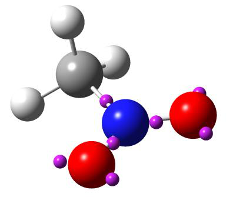
2 // Medium-quality grid Once the calculation of ESP grid data and the basin generation are finished, five attractors are found. Notice that this time the number of grids travelled to box boundary is not zero again (about 1954 grids), but it completely does not matter.
Choose option 0 to open GUI, you can see that attractors 1, 2 and 3 correspond to ESP maxima due to nuclear charges. Occurrence of lone pair often makes ESP at corresponding region negative, clearly attractors 4 and 5 exhibited this effect. Attractors 4 and 5 are colored by light blue because they are lying in negative region, in fact they are not attractors but "repulsors" (minima) of ESP. By clicking "4" in the basin list and checking "Show basin interior" box, you will see the graph below, which exhibits the corresponding basin region.
If you want to visualize which grids have traveled to box boundary during basin generation, you can select "Boun" in the basin list, see the graph below. Evidently, these grids lack physical meaning and hence can be simply ignored. They are only present in the regions far from atoms.
Now click "RETURN" button to close the GUI.
Measuring geometry Sometimes one needs to obtain geometry information between attractors and nuclei. As an instance, we enter function -2, and input a1 c4, the distance between nucleus of atom 1 (namely oxygen) and attractor 4 will be shown on the screen, the value is 2.272 Bohr. Next, input c4 a1 c5, then the angle of "attractor 2 -- atom 1 -- attractor 3" will be outputted, the value is 86.01 degree,
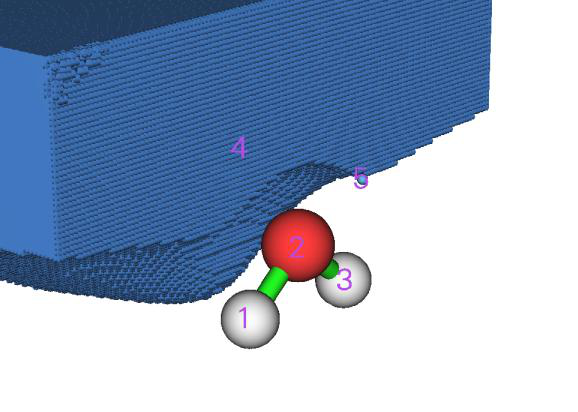
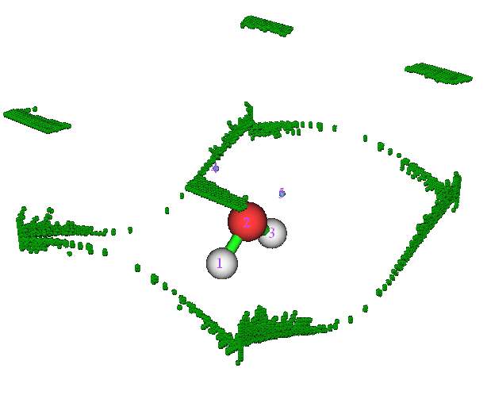
which in some sense can be regarded as the angle between the two lone pairs.
Input q to exit the geometry measurement interface.
Clustering attractors Assume that we want to cluster attractors 4 and 5 together as a degenerate attractor to make they collectively represent the two lone pairs, we can input
Multiwfn session
- -6 — Set parameter for attractor clustering or manually perform clustering
- 3 — Cluster specified attractors
- 4,5 — Attractors 4 and 5 will be clustered as a single one
- 0 — Return Select option 0 to open GUI, as shown below, you can find that the indices of all attractors have changed, and the two attractors corresponding to the oxygen lone pairs now sharing the same index, namely
Integrating basins Close the GUI by clicking "RETURN" button, choose option 2 and then select 1 to integrate electron density in the ESP basins, the result is
#Basin Integral(a.u.) Volume(a.u.^3)
1 0.8776693902 390.34100000
2 7.5388327160 26.52400000
3 0.8776693895 390.28300000
4 0.6822297997 654.32200000
Sum of above values: 9.97640130
Integral of the grids travelled to box boundary: 0.00000007
Since currently basin 4 is just the whole negative ESP region, the result shows that in average there are 0.682 electrons in the negative ESP region. Indeed this value is not large (one may expect that there should be about four electrons due to the two lone pairs), this is because ESP of most regions of the molecular space is dominated by nuclear charges and hence positive.
Simultaneously showing ESP minimum points and isosurfaces In J. Comput. Chem., 39, 488 (2018), the authors showed that by plotting ESP minimum points and isosurfaces in the same map, the region of lone pairs can be very clearly exhibited. The isovalue is chosen to be higher than global minimum value of ESP by 10 kcal/mol. Here we plot this kind of map.
Recall that when we just finished the basin generation, the value of each ESP minimum is printed on screen (you can also choose option " -3 Show information of attractors" any time to show them again):
Attractor X,Y,Z coordinate (Angstrom) Value
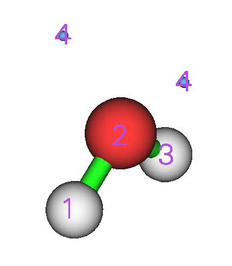
1 -0.02645886 -0.76730701 -0.48343728 17.61230000
2 0.02645886 -0.02645886 0.09865769 79.16270000
3 0.02645886 0.76730701 -0.48343728 17.61230000
4 -0.82022474 0.02645886 0.99825901 -0.09222160
5 0.82022474 0.02645886 0.99825901 -0.09222160
Clearly, the global minimum value is -0.09222*627.51 = -57.9 kcal/mol, the isovalue should then be set to -0.09222+10/627.51 = -0.07628 a.u.
Enter option 0, in the GUI window deselect "Attractor labels", then input
Multiwfn session
- -10 — Return to main menu
- 13 — Process grid data
- -2 — Visualize isosurface of the grid data in memory In the GUI, input -0.07628 in "Isosurface value" box, deselect "Show both sign", choose "Isosurface style" - "Use mesh", make sure that "Show atomic labels" has been activated, choose "Other settings" - "Set atomic label type" - "Element symbol". Finally, click "Save picture" button to save image file to current folder, you will see below effect (the value is manually labelled)
Perform basin analysis using external cube file Multiwfn is able to perform basin analysis solely based on grid data, thus the real space function to be analyzed could not be anyone that formally supported by Multiwfn, such as the Anisotropy of the Induced Current Density (Chem. Rev., 105, 3758 (2005)), which can be calculated by AICD or GIMIC codes. In order to illustrate this important feature, now we redo some analyses shown above but using the grid data directly generated by the cubegen utility in Gaussian.
Run below commands in console window of your system to produce density.cub and ESP.cub.
cubegen 0 fdensity H2O.fch density.cub 0 h
cubegen 0 potential H2O.fch ESP.cub 0 h
Then boot up Multiwfn and input ESP.cub // This file contains ESP grid data. After loading it, the grid data will be stored in memory
Multiwfn session
- 17 — Basin analysis
- 1 — Select real space function used to partitioning basins
- 2 — Generate the basins by using the grid data stored in memory Now visualize located attractors in option 0:
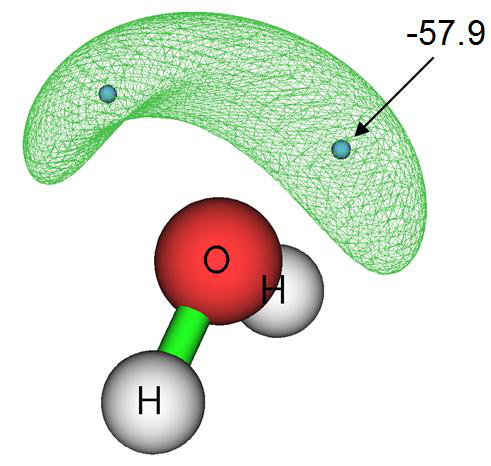
Exit GUI, then input following commands
Multiwfn session
- 2 — Integrate real space functions in the basins
- -1 — Use the grid data stored in external file as integrand
- density.cub — This file contains electron density grid data
The result is very close to the one we obtained in Part 1 of present section. For example, the electron population number in negative ESP region we get here is 0.339*2=0.678, while the counterpart value we obtained earlier is 0.682.
At last, we select option 3 to calculate electric multipole moments for the basins. Because the cube file does not contain GTF (Gaussian type function) information, you will be prompted to input the path of a file containing GTF information of present system, so that electric multipole moments can be calculated. We input the path of the H2O.fch file, and then input -1, the electric multipole moments of all basins will be immediately outputted on screen.
4.17.4 Basin analysis of electron density difference for H2O
In this example we analyze basins of electron density difference for H2O to quantitatively study the electron density deformation during formation of the molecule.
Before doing the basin analysis, we need to generate grid data of electron density difference first by main function 5, wavefunction file of all related elements must be available. Here we directly use the set of atomic wavefunction files provided in Multiwfn package, namely copying "atomwfn" subfolder in "example" folder to current folder, then during generating grid data of electron density difference Multiwfn will automatically use them. There are several different ways to prepare atomic wavefunction files, please recall Section 4.4.7 and consult Section 3.7.3.
After that, boot up Multiwfn and input: examples\H2O.fch
Multiwfn session
- Generated at B3LYP/6-31G level 5** — Calculate grid data
- -2 — Obtain deformation property
- 1 — Electron density
- 3 — High-quality grid. Because the variation of electron density difference is complicated, using relatively high quality of grid is compulsory. Note that the "high-quality grid" we selected here only defines the total number of grids, and hence has different meaning to the one involved in function 1 of basin analysis module
Multiwfn session
- 0 — After the calculation is finished, return to main menu
- 17 — Basin analysis module
- 1 — Generate basins and locate attractors
- 2 — Generate the basins by using the grid data stored in memory (namely the grid data we just
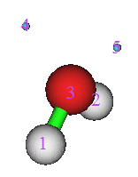
calculated by main function 5)
Enter function 0 to visualize the result, you will see the left graph shown below. After deselecting "Show molecule", the graph will look like the right one
Positive (negative) part of electron density difference corresponds to the region where electron density increases (decreases) after formation of the molecule. Light green spheres denote the maxima of the positive part, while light blue ones denote the minima of the negative part.
If you find it difficult to imagine why the maxima and minima distribute like this, I suggest you plot plane maps for electron density difference. The left graph shown below is the electron density difference map perpendicular to the molecular plane, while the right graph is the map in the molecular plane.
By comparing the attractors with plane maps, it is evident that attractors 4 and 5 are the maxima in the region where electron density is enhanced due to the formation of the O-H bonds. While the presence of attractor 6 arises from the electron aggregation due to formation of the lone pairs.
Note 1: Attractor 6 is two-fold degenerate, namely as you can see, it corresponds to two attractors. This is because the two attractors share the same value and they are very closely placed with each other.
Note 2: Attractor 8 does not have its counterpart in another side of symmetry plane. The reason for this problem is that the grid quality employed is not high enough relative to the complicated characteristic of electron density difference.
It is interesting to examine how many electrons are aggregated between C and H due to the bond formation. There can be many ways to measure this quantity; the most reasonable one for present case is to integrate the electron density difference in basin 4 or in basin 5. Let us do this now. Choose function 2, and then select option 0 to take the grid data of electron density difference as integrand. From the output we can find that the integral is 0.102 e.
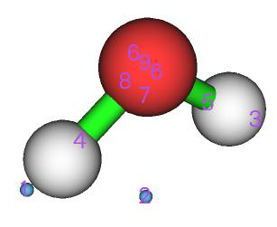
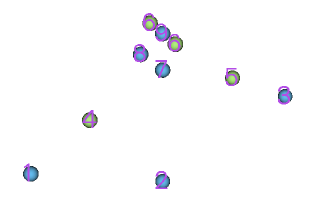
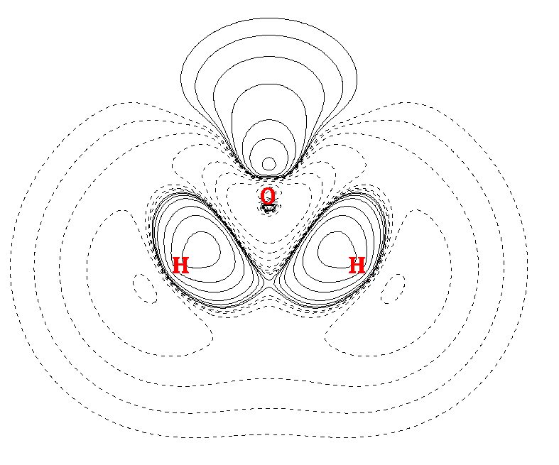
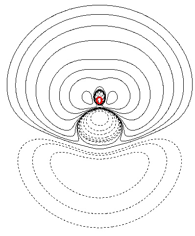
If you would like to compare the attractors with the isosurface of electron density difference, you can simply choose option -10 to return to main menu of Multiwfn, and then choose suboption -2 in main function 13 to plot the isosurface of the grid data stored in memory, the attractors we located will be shown together, as shown below (isovalue=0.05), where green and blue parts correspond to positive and negative regions, respectively.
4.17.5 Study source function in AIM basins¶
Source function has been briefed in part 19 of Section 2.6. Commonly, bond critical point (BCP) is taken as the reference point of source function when bonding problem is discussed. In this example we calculate source function in AIM basins for ethane; in particular, based on source function we will get the contribution from methyl group to the electron density at the BCP of its C-H bond. Before calculating source function, we should perform topology analysis first to find out the position of the BCP.
Boot up Multiwfn and input: examples\ethane.wfn
Multiwfn session
- Optimized and produced at B3LYP/6-31G* 2 — Topology analysis
- 2 — Search nuclear critical points
- 3 — Search BCPs
- 0 — Visualize result, see below
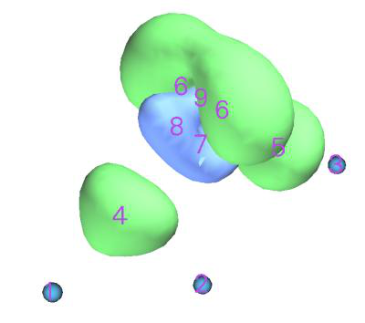
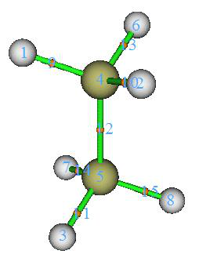
Critical point 11 will be selected as the reference point of the source function. Of course, selecting which BCP is completely arbitrary. Now close the GUI of topology analysis module
You'd better choose option 7 and then input 11 to check the electron density at this CP, because theoretically the integral of source function in the whole space should equal to the electron density at its reference point, therefore this value is important to examine if the integration of source function is accurate enough. The electron density at CP11 is 0.276277.
From the information shown in the command-line window you can find the coordinate of CP11 is (0.0,-1.199262548,-1.909104063), copy it from the window to clipboard (if you do not know how to do this please consult Section 5.4). Next, we will set CP11 as the reference point of the source function. Although you can define reference point by "refxyz" parameters in settings.ini, there is a trick that can do the same thing, by which you need not to close Multiwfn and then reboot it to make the parameters take effect!
Multiwfn session
- Input below commands -10 — Return to main menu from topology analysis module
- 1000 — A hidden interface
- 1 — Set reference point Paste the coordinate of CP11 to the window and then press ENTER button.
- 17 — Basin analysis
- 1 — Generate basins and locate attractors
- 1 — Electron density
- 2 — Medium-quality grid Enter GUI by choosing function 0, you will see
Now we integrate source function in the AIM basins. Input following commands
Multiwfn session
- 7 — Integrate real space functions in AIM basins with mixed type of grids
- 1 — Integrate a specific function with atomic-center + uniform grids
- 19 — Source function
The result is
Atom Basin Integral(a.u.) Vol(Bohr^3) Vol(rho>0.001)
1 (C ) 5 0.00361772 149.307 70.392
2 (H ) 8 0.00289355 468.732 50.058
3 (H ) 6 0.00280041 443.982 50.097
4 (H ) 7 0.00280276 418.343 50.095
5 (C ) 2 0.12224052 150.514 70.396
6 (H ) 1 0.12040142 475.383 50.054
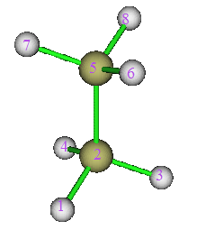
7 (H ) 4 0.01051821 424.105 50.095
8 (H ) 3 0.01051742 450.072 50.097
Sum of above integrals: 0.27579202
Sum of basin volumes (rho>0.001): 441.284 Bohr^3
The sum of the integrals is very close to the electron density at CP13 (0.276277). The sum of the integral in basin of 1, 2, 3 and 4 is 0.1204+0.1222+0.01052=0.2636, which represents the integral in the space of methyl group and accounts for 0.2636/0.2758100%=95.6% of the total integral value, exhibiting that methyl group is the main source of the electron density of the BCP of its C-H bonds.
4.17.6 Local region basin analysis for polyyne¶
Sometimes, the geometry of the system we studied is rather extended, for instance, polyyne \(C_{14}H_{2}\), which can be formally illustrated as
H1−C2≡C3−C4≡C5−C6≡C7−C8≡C9−C10≡C11−C12≡C13−C14≡C15−H16 If we are only interested in the electronic structure characteristic of local region in this system, by properly setting up grid, basin analysis can be conducted only for the interesting region rather than for the whole system to save computational time. As an example, in this section we will try to acquire electron population number in the ELF basin of V(C7,C8) and V(C8,C9) with minimum computational cost. Boot up Multiwfn and input following commands:
Multiwfn session
- examples\polyyne.wfn — Optimized and produced under B3LYP/6-31G*
- 17 — Basin analysis
- 1 — Generate basins and locate attractors
- 9 — ELF
- 8 — Set the grid by inputting center coordinate, grid spacing and box length
- a8 — Take the position of atom 8 as box center
- 0.08 — Grid spacing (Bohr)
- 10,10,8 — Box length in X, Y and Z directions (Bohr).
Note that current molecule is aligned in Z-axis. Obviously, the larger the box, the longer the computational time must be spent. While the box should not be too small, otherwise the basins of interest may be truncated. Choosing appropriate box size highly relies on users' experience
After the calculation is finished, enter GUI by selecting option 0, you will see the graph shown at the right side. Clearly, only several attractors near C8 are located. Basin 5 and basin 21 correspond to V(C7,C8) and V(C8,C9), respectively. Notice that although attractors 1 and 6 are also located, due to their corresponding basins are not only large but also close to box boundaries, it can be expected basins 1 and 6 are severely truncated and hence studying them is meaningless.
When you use the above manner to study local region, you will always find there are many grids travelled to box boundary. In present example, as shown in command-line window, the number of such type of grids is 60668. You can visualize them by choosing "Boun" in basin list of GUI, see the graph below
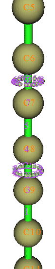
Now close GUI, select option 2 and then select 1, the result shows that the integral of electron density in V(C7,C8) and V(C8,C9) are 2.78 and 5.02, respectively. Evidently, the bonding between C8-C9 is much stronger than C7-C8, this is why the bond length of the former (1.236Ǻ) is shorter than the latter (1.338Ǻ). Note that the electron population number in V(C,C) of acetylene is 5.37 (see Section 4.17.2), therefore it can be expected that C8-C9 is weaker than typical C-C triple bond, mostly due to the electron global conjugation in polyyne.
The interested users can redo the basin analysis for the whole system by using the same grid spacing (0.08 Bohr), the computational amount will be much larger than current example. For V(C7,C8) and V(C8,C9), you will find the result does not differ from the one we obtained above detectably.
4.17.7 Evaluate atomic contribution to population of ELF basins¶
In this section, I will use CH3NH2 as example to show how to obtain contribution of C and N to population of V(C,N) ELF bond basin based on AIM partition of atomic space, this is useful to examine bond polarity. You can also use a similar way to obtain atomic contribution to population of any other kind of basin (e.g. LOL basin, ESP basin).
First, we need to generate a cube file named basin.cub, whose grid value corresponds to index of ELF basins. Boot up Multiwfn and input
Multiwfn session
- examples\CH3NH2.wfn 17 — Basin analysis
- 1 — Generate basins and locate attractors
- 9 — ELF 2
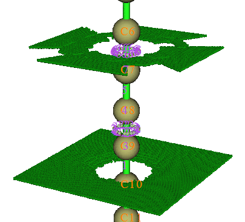
Evidently, basin 5 corresponds to V(N,C), which is the one we will study. Then close the GUI and input
Multiwfn session
- -5 — Export basin as cube file
- a — Export basin.cub in current folder
Next, we generate AIM basins as usual, the grid setting must be exactly identical to basin.cub
Multiwfn session
- 1 — Regenerate basins
- 1 — Select real space function
- 1 — Electron density
- 9 — Use grid setting of another cube file, this is the safest way to ensure the grid data to be generated has the same grid setting as basin.cub
basin.cub
Multiwfn session
- 0 — Check attractors
It is clear that the attractor index corresponding to N and C are 2 and 3, respectively. Then we evaluate atomic contribution to population of the basins defined in basin.cub
Multiwfn session
- 9 — Then program loads basin.cub in current folder
- 2 — The index of the attractor corresponding to N
- 5 — The 5th ELF basin, i.e. V(N,C) basin The result is 1.15866, namely N contributes 1.159 electrons to V(N,C) basin. Then input
- 3 — The index of the attractor corresponding to C
- 5 — The 5th ELF basin, i.e. V(N,C) basin From the result we know that C contributes 0.463 electrons to the V(N,C) basin. Since N contributes much more electrons than C to their ELF bond basin, it may thus be concluded that C-N is a bond with significant polarity.
4.17.8 Calculating high ELF localization domain population and volume (HELP, HELV)¶
The high ELF localization domain population and volume (HELP and HELV, respectively) were proposed in ChemPhysChem, 14, 3714 (2013), it was shown that they are useful quantities in
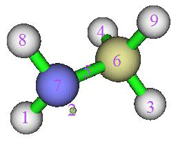
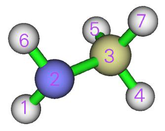
characterizing lone pair electron and they have close relationship with molecular properties that related to lone pairs, such as ionization potential and energy of frontier molecular orbitals, see the ChemPhysChem paper for detail. The definitions of HELP and HELV are clearly illustrated in the map below, PH3 is taken as an instance.
From the map above it can be seen that this method defines a region named high ELF localization domain (HEL), which simultaneously satisfies three conditions:
(1) Electron density is larger than 0.001 a.u. (2) Electron localization function (ELF) is larger than 0.5 (3) Every point belongs to the ELF basin corresponding to a lone pair The volume and electron population of HEL are denoted as HELV and HELP, respectively. It is believed that this definition is better than (3) for representing lone pair area, because insignificant
region (i.e. outside vdW surface, which corresponds to ρ = 0.001 a.u.) and the region without clear chemical meaning (i.e. ELF < 0.5) are excluded.
Now we use Multiwfn to calculate HELV and HELP for PH3. Boot up Multiwfn and input
Multiwfn session
- examples\PH3.wfn — Generated at M06-2X/def2-TZVPP level, optimized at the same level
- 17 — Basin analysis
- 1 — Generate basins and locate attractors
- 9 — ELF must be chosen to define basins if you intend to calculate HELP and HELV
- 2 — Medium-quality grid
Now we select option 0 to check attractor indices:
From the map above, we can find attractor 5 corresponds to lone pair of the P atom.
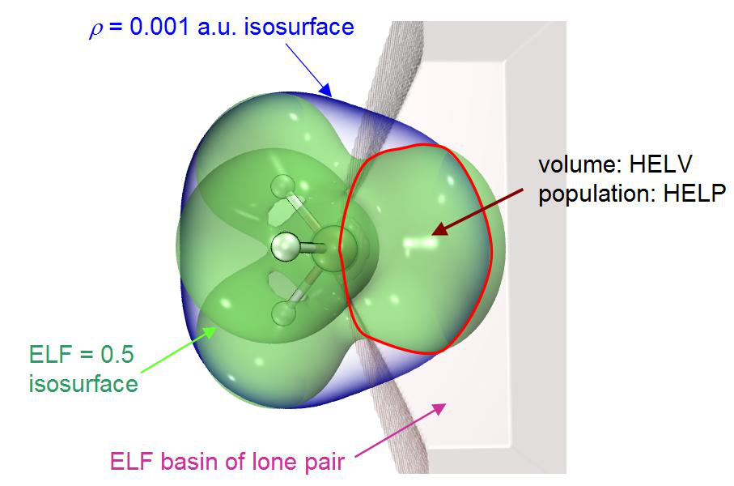
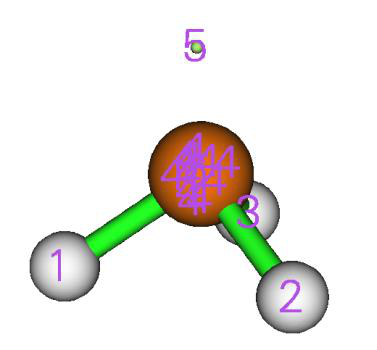
Multiwfn session
- Next, we input 10 — Calculate HELP and HELV
- 0 — Select basins and calculate their HELP and HELV
- 5 — The basin index corresponding to the lone pair of the P atom After a while, you will see:
Basin information: (constraints are not taken into account)
Population: 2.0719 Volume: 1561.1570 Bohr^3
High ELF localization domain population (HELP): 1.4858
High ELF localization domain volume (HELV): 80.5500 Bohr^3
As can be seen, HELP and HELV are 1.4858 and 80.55 Bohr3, respectively, which are very close to the values in the original paper, namely 1.50 and 80 Bohr3. The marginal difference comes from the fact that the calculation level we employed is not identical to the original paper, in addition, the detail of numerical setting in our calculation must be somewhat different to the original paper.
From above output you can also find the population and volume of the ELF basin, which can also be calculated via option 2 of basin analysis module.
4.17.9 Evaluate atomic contributions to system electronic energy¶
Background knowledge Electronic energy of the whole system can be viewed as sum of electronic energies of all atoms, which correspond to integral of electronic energy density E(r) in atomic basins. This decomposition of system energy is very helpful for providing deep insight into status of atoms in different chemical environments, and important in revealing major factors that influences relative energy between different configurations or conformations. See Russ. Chem. Rev., 78, 283 (2009) for extensive discussions and application examples.
There is a relationship E(r) = -K(r), where K(r) is Hamiltonian kinetic energy. The integral of
particles is absorbed into the exchange-correlation functional. Therefore, the actual EΩ should be finally scaled as follows so that sum of all EΩ just equals \(E_{\Omega}\):
It is important to note that pseudopotential should not be employed, because it makes virial theorem severely violated. In addition, geometry should be sufficiently optimized to diminish deviation to virial theorem.
Example In this example, we calculate atomic energies of H2CO. Boot up Multiwfn and input examples\H2CO.wfn // Yielded by B3LYP/6-31G* calculation at corresponding minimum
structure
Multiwfn session
- 17 — Basin analysis
- 1 — Generate basins
- 1 — Electron density
- 2 — Medium-quality grid
- 7 — Integrate real space functions in AIM basins with mixed type of grids
- 2 — Exact refinement of basin boundary
- 6 — Hamiltonian kinetic energy K(r) The result is
Atom Basin Integral(a.u.) Vol(Bohr^3) Vol(rho>0.001)
1 (C ) 2 36.98331415 243.914 67.166
2 (H ) 4 0.59352399 554.936 49.848
3 (O ) 1 75.30251602 887.039 127.096
4 (H ) 3 0.59369956 567.076 49.832
Sum of above integrals: 113.47305372
Sum of basin volumes (rho>0.001): 293.942 Bohr^3
The electronic energy yielded by quantum chemistry calculation can be manually found at the end of the H2CO.wfn, namely -114.50047 a.u., which is also printed by Multiwfn after loading this file. Note that the T is 113.47305 a.u., hence the atomic energy of O3 can be calculated as 75.30252*-114.50047/113.47305 = -75.98433 a.u., similarly for other atoms. You can also then manually sum up atomic energy for some atoms to derive fragment energy.
It is noteworthy that the actual virial ratio of H2CO.wfn is 2.009, which can be found at the end of this file and also printed after Multiwfn loading this file. Since its deviation to exact virial
ratio 2.0 is insignificant, our scaling treatment of \(E_{\Omega}\) is reasonable and acceptable.
An evidently more convenient and better way of deriving atomic contribution to energy is choosing user-defined function -11 as the integrand, it is scaled electron energy density involving virial ratio, whose integral over the whole space exactly equals the electronic energy given by quantum chemistry code, see corresponding part of Section 2.7 for its definition. Now we redo the example above. Open settings.ini and set “iuserfunc” to -11, then boot up Multiwfn and input
Multiwfn session
- examples\H2CO.wfn 17 — Basin analysis
- 1 — Generate basins
- 1 — Electron density
- 2 — Medium-quality grid
- 7 — Integrate real space functions in AIM basins with mixed type of grids
- 2 — Exact refinement of basin boundary 100 //User-defined function, which now corresponds to the scaled electron energy density The result is
Atom Basin Integral(a.u.) Vol(Bohr^3) Vol(rho>0.001)
1 (C ) 2 -37.32041642 244.279 67.166
2 (H ) 4 -0.60162114 554.745 49.848
3 (O ) 1 -75.97660985 887.040 127.096
4 (H ) 3 -0.60179889 566.901 49.832
Sum of above integrals: -114.50044630
It can be seen that the integral -114.50044630 a.u. is basically exactly equal to the electronic energy of -114.50047 a.u. that recorded in the .wfn file. The contribution of O3 to total electronic energy is -75.97661 a.u., which is very close to the -75.98433 a.u. we obtained via aforementioned way.
4.17.10 Plotting ELF isosurface map colored by basin types¶
Many papers studied ELF by plotting its isosurface map and colored the isosurfaces according to basin type (monosynaptic, disynaptic, and others). In Section 4.5.1 I have already mentioned it is possible to use ChimeraX software to easily plot such a map based on .cub file exported by Multiwfn, however there are some limitations, namely the coloring will change when isovalue is changed, and a whole isosurface cannot be colored differently in the subregions corresponding to different types of basins. In this section, I will show how to use basin analysis module of Multiwfn in combination with VMD (freely available at http://www.ks.uiuc.edu/Research/vmd/) to plot the basin type colored ELF isosurface map without these limitations. A simple molecule oxirane will be taken as example, its wavefunction file is examples\oxirane.fchk. The version of VMD I am using is 1.9.3.
Boot up Multiwfn and input examples\oxirane.fchk
Multiwfn session
- 17 — Basin analysis
- 1 — Generate basins
- 9 — ELF 2
Close GUI window, and select option “12 Assign ELF basin labels”, you will see
Basin indices, populations (e), volumes (Angstrom^3) and assigned labels
## 1 Basin 7 Pop.: 2.0953 Vol.: 0.125 Label: C(C1)
## 2 Basin 6 Pop.: 2.0953 Vol.: 0.125 Label: C(C2)
## 3 Basin 12 Pop.: 2.1351 Vol.: 0.043 Label: C(O3)
## 4 Basin 11 Pop.: 2.6773 Vol.: 33.139 Label: V(O3)
## 5 Basin 10 Pop.: 2.6773 Vol.: 33.143 Label: V(O3)
## 6 Basin 9 Pop.: 0.9741 Vol.: 1.471 Label: V(C1,O3)
## 7 Basin 3 Pop.: 1.8936 Vol.: 9.852 Label: V(C1,C2)
## 8 Basin 5 Pop.: 2.1096 Vol.: 82.164 Label: V(C1,H4)
## 9 Basin 4 Pop.: 2.1096 Vol.: 82.154 Label: V(C1,H5)
## 10 Basin 8 Pop.: 0.9741 Vol.: 1.477 Label: V(C2,O3)
## 11 Basin 2 Pop.: 2.1096 Vol.: 83.498 Label: V(C2,H6)
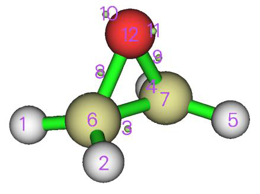
## 12 Basin 1 Pop.: 2.1095 Vol.: 83.498 Label: V(C2,H7)
Number of core basins is 3, their indices:
6,7,12
Number of 1-synaptic basins is 2, their indices:
10,11
Number of 2-synaptic basins is 7, their indices:
1-5,8,9
By comparing the automatically assigned basin labels and the graph in GUI window, you can confirm that the basins are indeed correctly labelled.
Then input
Multiwfn session
- -5 — Export basins as cube file
- b — A special mode designed for plotting basin type colored ELF isosurfaces in VMD
- 10,11 — Indices of the monosynaptic basins, corresponding to the highlighted text above
- 1-5,8,9 — Indices of the disynaptic basins, corresponding to the highlighted text above
Now basinsyn.cub and basinfunc.cub are exported in current folder. In basinsyn.cub, the values within the monosynaptic and disynaptic basins regions are -1 and 1, respectively, while all other regions have value of 0. The basinfunc.cub records the real space function used to generate basins, namely ELF in the present context.
Move the basinsyn.cub and basinfunc.cub as well as plotting script examples\scripts\basinsyn.vmd to VMD folder. Then boot up VMD, input source basinsyn.vmd to execute the script, you will see the following figure. The default isosurface is 0.8, and the regions corresponding to monosynaptic and disynaptic basins are colored by green and red, respectively, while other basins (corresponding to core basins in this example) are colored by white.
You can change isovalue by entering “Graphics” - “Representation” and input expected value in “Isovalue” textbox. In this panel you can also adjust the material of isosurface. If you want to change the color for different types of basins, enter “Graphics” - “Colors” - “Color Scale” and change corresponding options.
The above illustrated plotting method is never limited to ELF, you can similarly employ it to others, such as LOL, IRI, etc.
Next, assume that we want to color the V(C,H) basins in the graph above by yellow, how to do
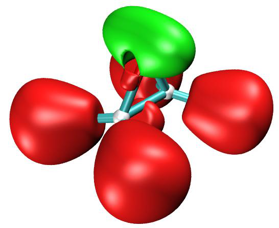